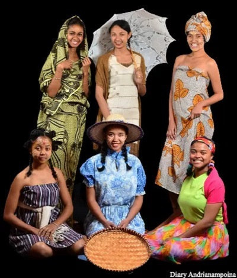
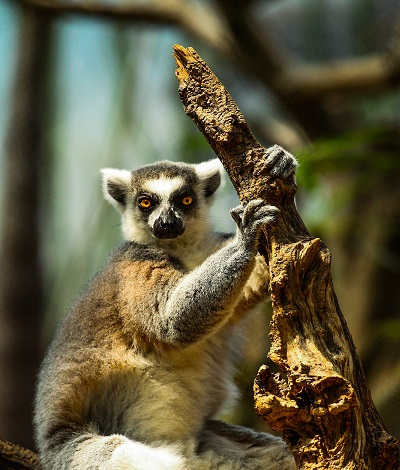
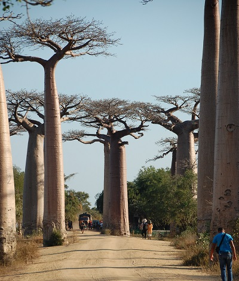
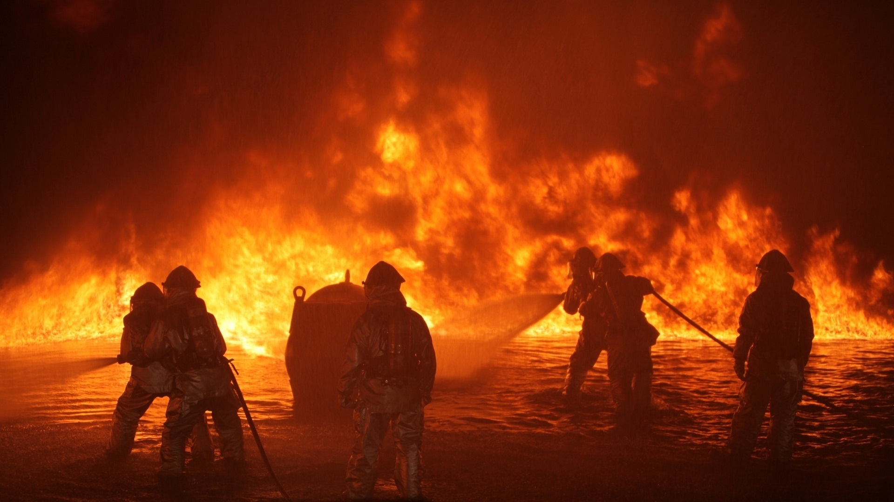
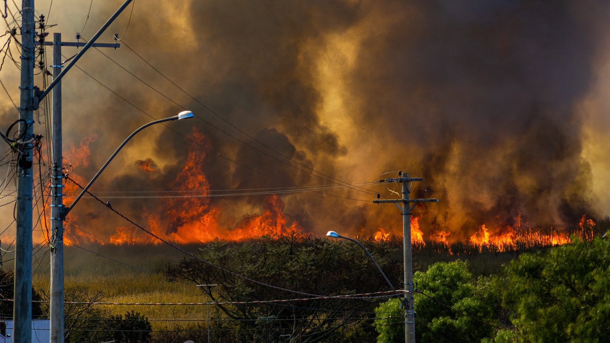
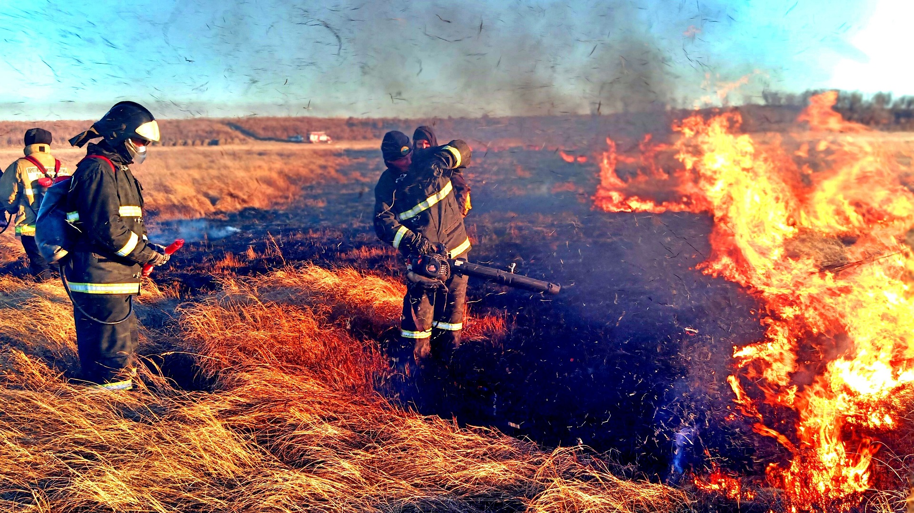

Madagascar est-une île merveilleuse : Il faut la preservé...

Les malagasy :
La population qui habite à Madagascar s'appelle "Malagasy".
Ce sont des populations riche en sourire et en entraide...

Las faune de Madagascar :
La plupart des faunes de Madagascar sont endemique.
Parmis le plus connu, on l'appelle "Maki de Madagascar".

Les flore de Madagascar :
Les flores de Madagscar sont parmis le plus beau du monde et plusieurs sont endemique.
Comme le Baobab, Ravinala,...

Le feu de brousse : Un danger pour l'environnement
Actuellement, les feux de brousse ravage Madagascar. On ne sait pas encore le vraie causes ,
mais nombreux sont les solutions pour diminués ou même éradiqué se problème qui présente un
grand danger pour l'environnement (surtout sur les faunes et les flores) de l'île.
Pourquoi les gens font les feux de brousse, et quelles sont les solutions contre cette pratiques?

Problématiques :
Madagascar est un pays en voie de dévelopement, les moyens pour éradiqués les feux de brousse sont encore insuffisantes (insuffisance matériel et technologie).
La communication limité présente une problème. Car dans les campagnes quand il y a des feux de brousse les gens ne peuvent pas communiqués rapidement à causes de manque de réseaux.
le manque d'éducation aussi est une grande problème parce-que les gens ne savent pas ce qu'ils font, donc la non incitation est une source de ce problème.
Il y aussi les gens qui provoquent les feux de brousse involontaire, par exemple : Il fume de la cigarette dans la forêt, après il jete le reste de la cigarette dans la forêt et cela provoque les feux de brousse.
Il y a aussi des causes naturelles qui provoquent les feux de brousses. Comme l'éclair et le soleil trop brûlant.
Mais le plus grandes problèmes qui contituent la plupart des feux de brousses à Madagascar est la pratique de la "TAVY" ou culture surbrulûre. Cette pratique est la cause de plus de la moitié des feux de brousses ` à Madagascar.

Conséquences :
Le pays se trouve dans une instabilité climatique à cause des feux de brousse (surtout le réchauffement climatique). La température est instable .
Les feux de brousse détruit les terres fertiles de Madagascar. Elles detruisent la partie fertiles du sol et laisse une terre aride. Parce-que la plus ne tombe plus .
À causes des feux de brousse, nombreux sont les faunes et les flores qui sont brûlées, leurs habitat naturel sont ravagés, et même la disparition d'une espèce sont causés par cette problème.
La brûlure des habitat de l'homme car les feux de brousses hors de contôles peuvent ravagés toutes une ville. Et cela provoque des pertes matériels et pertes humaines.
Les feux de brousses aussi peuvent provoqués la secheresse de la terre. À Madagascar, il ya des saisons òu trouver de l'eau sont tr`s difficiles.
Mais les feux de brousses aussi détruit le couche d'ozones de la terre. Donc ce n'est pas Madagascar seulement qui est touché par cette problème mais le monde entier sont tous concèrnés. Il faut des solutions efficaces pour éradiqués ce problème.

Solutions :
Premièrement,la solution pour diminué les feux de brousses est d'apprendre les gens, sur la danger apporter par les feux de brousse. incité et informer les gens à ne pas commettre le "TAVY".
Ensuite, Il faut instaurer des organisations aux seins des communes ou des district, et même dans les grandes villes qui lutte contre cette pratique (TAVY).
Il faut aussi importer des matérielles adéqouoite pour eteindre les feux de brousses, et mettre des pompier à la campagne.
Il faut aussi partager des informations dans les radio, les télévisions, et Internet sur les numéros des pompier et des polices, et aussi savoir travailler avec les populations locales.
On peut aussi utiliser la téchnologies comme le géolocalisation avec la carte de Madagascar pour signaler rapidement les feux de brousse (utiliser 24h/24).
Une autre téchnologies qu'on peut utiliser pour prevenir les feux de brousses aussi est la mise en place des drônes par l'Etat dans les endroit concèrnés. On peut programmer aussi des robot qui sont capable d'eteindre le feu
IL y a aussi des moyen plus téchniques et téchnologiques qu'on peut faire pour éviter les feux de brousse comme des arrosoirs automatique (programmer avec des IA: Intelligence artificielle) qui se déclenche en cas de feu.
Blog
Pendant l'année 2022, nombreux sont les reserve naturelles qui sont brûlés à Madagascar.
La grande île est victime des feux de brousse et des "TAVY".
La secheresse ravage la partie sud de l'île. et le rechauffement climatique est de plus en
plus important.
Parmis c'est brûlure des forêts sont présnté par les photo ci-dessous :